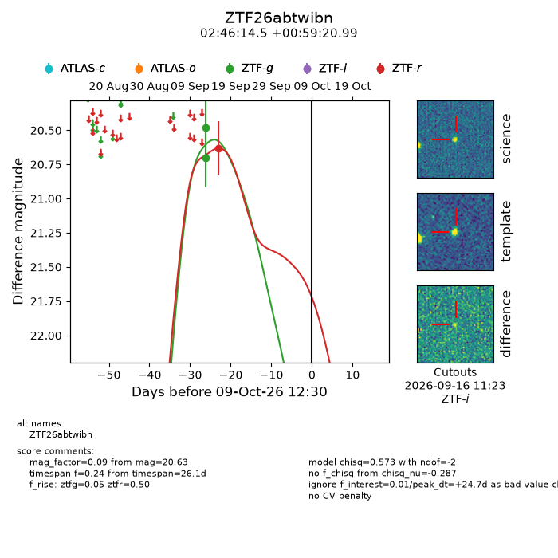
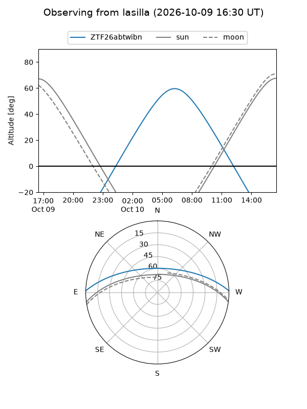
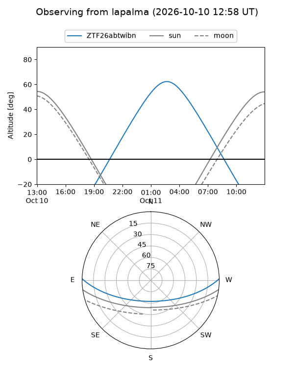
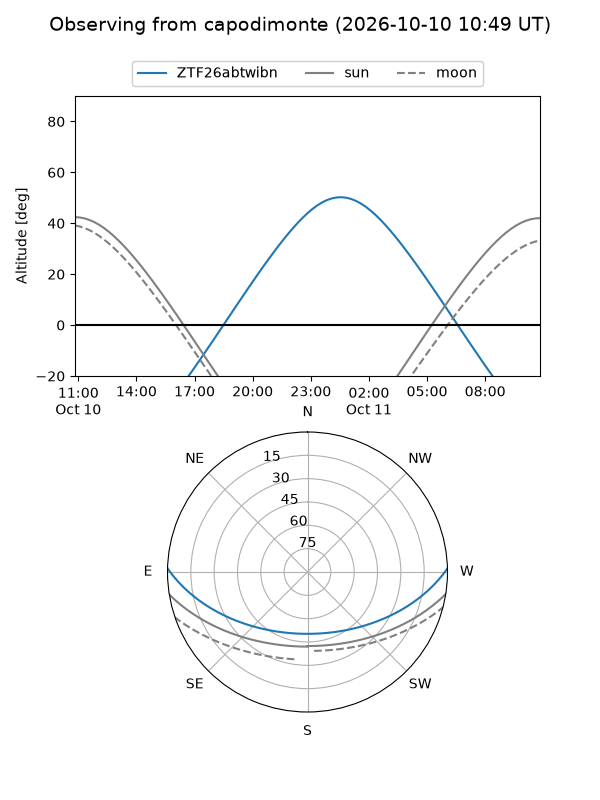
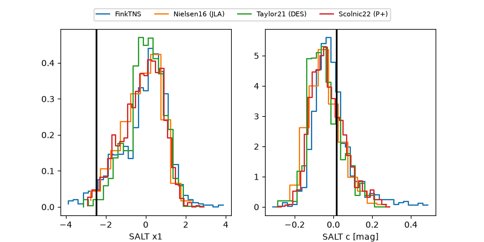

ZTF26abtwibn
Target ZTF26abtwibn at 2026-10-09 12:32
Aliases and brokers:
FINK-ZTF: ztf.fink-portal.org/ZTF26abtwibn
Lasair-ZTF: lasair-ztf.lsst.ac.uk/objects/ZTF26abtwibn
ALeRCE-ZTF: alerce.online/object/ZTF26abtwibn
Direct TNS query: direct search
alt names
ZTF26abtwibn (ztf,fink_ztf)
Coordinates:
equatorial (ra, dec) = 41.5602,+0.98916
equatorial (HMS+DMS) = 02:46:14.45,+00:59:20.99
galactic (l, b) = (172.0772,-50.59299)
Flags:
peak dt: +24.7
Photometry:
last ztfg=20.70, ztfr=20.63
2 ztfg, 1 ztfr detections
Lightcurve

Visibility



Additional plots
